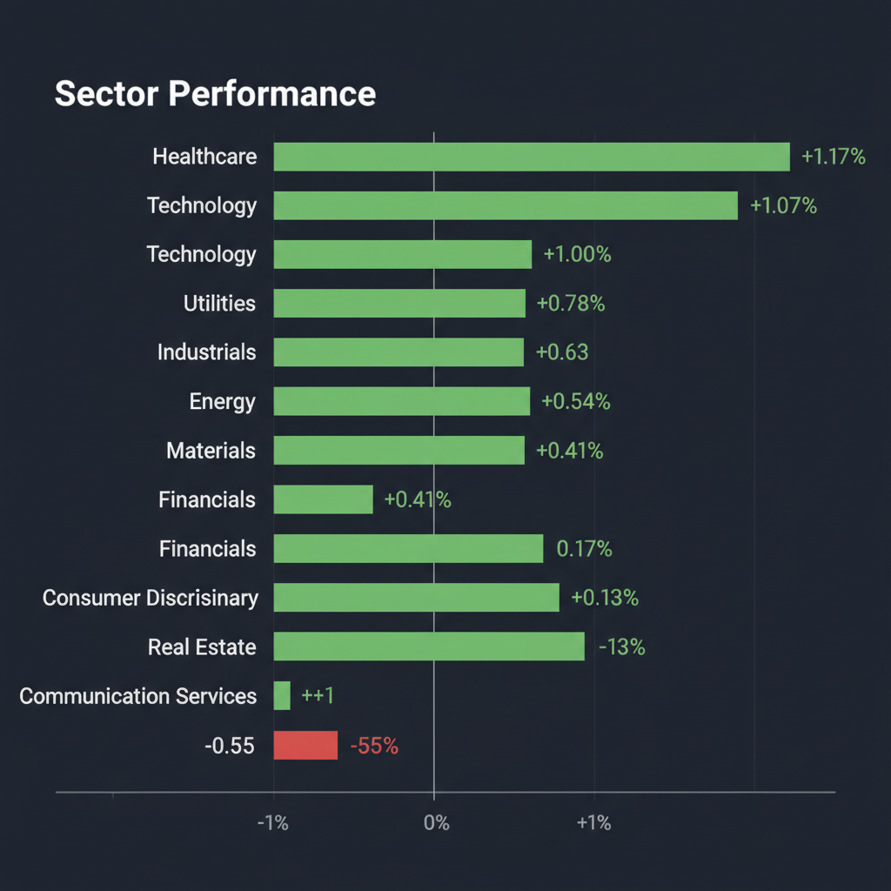
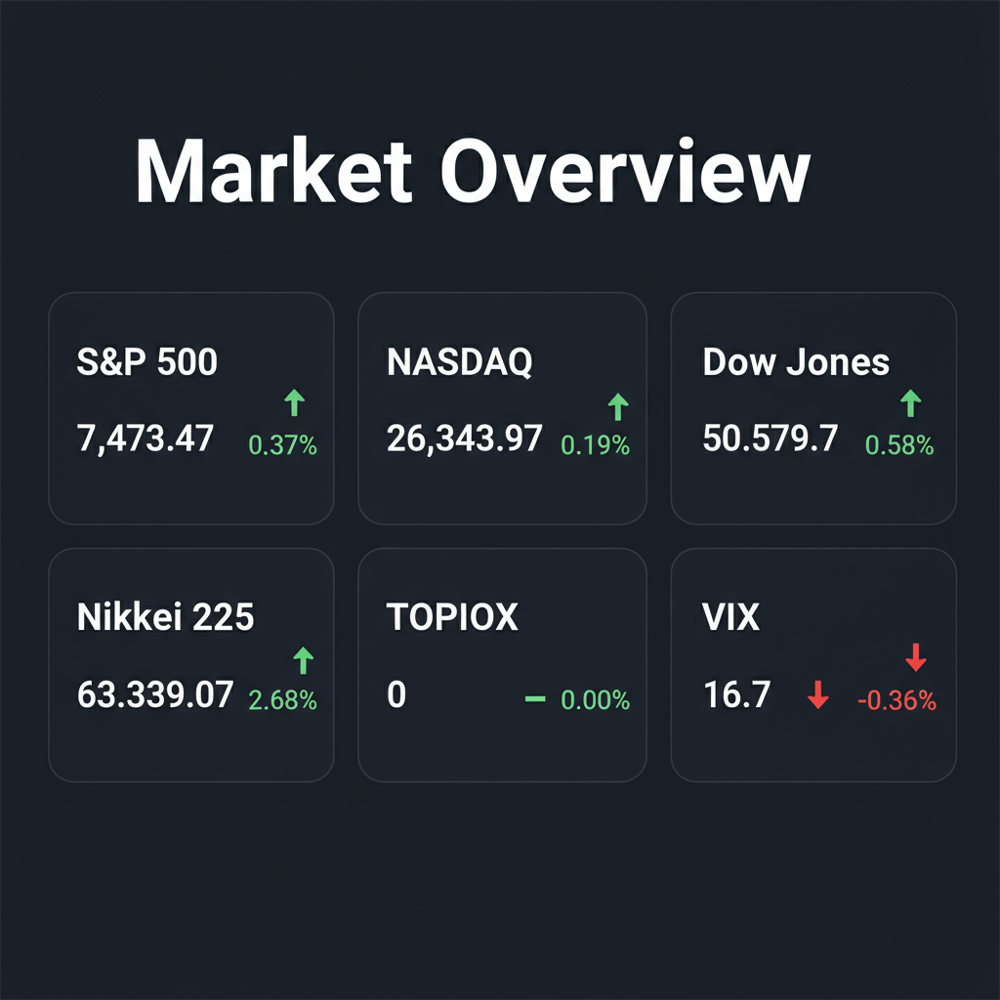

Daily Investment Report - 2026-05-24
Generated: 2026/5/24 7:25:38


1. エグゼクティブサマリー
- 日米主要指数は歴史的な高値圏にあるものの、大型AI株は期待先行によるバリュエーションの限界に直面し、好決算でも株価が急落する不安定な状況にあります。
- 原油高や債券市場のボラティリティ上昇というマクロリスクが顕在化する中、資金は過熱した大型株から、実需を伴う中小型インフラ企業や防衛的セクターへシフトし始めています。
- 投資家は足元の株高に慢心せず、利益確定とキャッシュ比率の引き上げでダウンサイドリスクに備えつつ、利益率の改善が著しい隠れた成長株へ選別投資すべき局面です。
2. 注目銘柄リスト
強気（買い推奨）
- LiveRamp (RAMP) [約20億ドル規模]: AI時代のデータマーケティング基盤として強固な顧客基盤を持ち、大企業からのM&Aターゲットとしても極めて高い戦略的価値があるため、下値リスクが限定的です。
- テラスカイ (3915) [数百億円規模]: 日本企業のクラウド導入という確実な実需を捉えており、売上成長に伴う営業利益率の劇的な改善が確認できているため、本格的な収益化フェーズ（テンバガー候補）として高く評価できます。
- アンリツ (6754) [約2,000億円規模]: データセンターの超高速通信を支える計測器の実需を独占的に享受できるニッチトップ企業であり、AIバブル的な過度な期待がまだ株価に織り込まれていないため割安に放置されています。
中立（様子見）
- Uber Technologies (UBER) / DoorDash (DASH) [数百億〜千億ドル規模]: 競合Delivery Heroの買収に向けた交渉が報じられており、業界再編のスケールメリットは魅力的ですが、巨額ディールの行方と出来高を伴うチャートの上値抜けを確認してから順張りでエントリーすべきです。
- 三菱UFJフィナンシャル・グループ (8306) [十数兆円規模]: 金利上昇の恩恵を直接受けるファンダメンタルズは良好ですが、直近の日経平均急騰に伴いPBRが上昇しているため、高値掴みを避け、移動平均線付近での押し目を待つのが賢明です。
- 東京海上ホールディングス (8766) [数兆円規模]: 決算でマイナスインパクトを受け株価が急落中ですが、中長期的な資本効率の改善と金利上昇ストーリーは不変であるため、テクニカルな下値支持線の形成を確認する段階です。
弱気（警戒）
- フジクラ (5803) [数千億円規模]: 業績自体は好調であったにもかかわらず株価が急落しており、AI期待先行によるバリュエーションの限界を露呈したため、調整が完全に終了するまで手出し無用です。
- Delivery Hero (DHER) [数十億ユーロ規模]: 買収期待のカタリストはありますが、依然として販管費率が高く利益なき成長のフェーズにあるため、金利上昇局面では財務的な脆弱性が露呈するリスクが高いです。
- アナログ・デバイセズ (ADI) [千億ドル規模]: 15億ドル規模の買収を発表したものの、ウォール街が現在の割高な株価水準と買収プレミアム（のれん）に警戒を示しており、利益確定売りの対象となりやすい状況です。
3. セクター推奨ランキング
日米の長期金利上昇圧力を直接的な収益源（利ザヤ拡大）に転換できる、現在のマクロ環境下で最大の恩恵を受けるセクターだからです。
原油高によるインフレ再燃やスタグフレーション懸念が意識される中、業績のブレが少なく最も下値抵抗力を発揮するディフェンシブセクターだからです。
バリュエーションが極限に達した大型AI株は避けるべきですが、AIを裏方で支える通信インフラやデータ管理プラットフォームなど、実需を伴う中小型株には資金のローテーションが見込めるためです。
原油価格の高止まりに対する直接的なインフレヘッジとして機能すると同時に、Dominion Energyなどに見られる事業再編・M&Aのカタリストが存在するためです。
- 5位：一般消費財（裁量消費・エンターテインメント）
物価上昇によって消費者の予算が逼迫し、厳格な支出の選別が始まっているため、強力な価格転嫁力を持たない企業の業績悪化リスクが極めて高いためです（最もアンダーウェイトすべきセクター）。
4. 今週の注目イベント
- フードデリバリー業界におけるM&A交渉の続報（Uber、DoorDash、Delivery Hero間の買収協議進展）
- NVIDIAの決算後の株価動向およびアナリストによる目標株価の再評価
- 中東情勢（イスラエル・イラン）のヘッドラインと原油価格・米長期金利の反応
- 日本の2026年度補正予算規模の拡大議論と、それに伴う国内債券市場（金利）の反応
5. リスク要因
- 中東の地政学的緊張を背景とした原油高によるインフレの再燃と、それに伴う米長期金利の急騰。
- 債券市場のボラティリティ上昇が株式市場へ波及し、高PERの大型グロース株を中心にバリュエーションが崩壊するフラッシュ・クラッシュ（急落）のリスク。
- AI関連銘柄における「期待値の過度な膨張」により、完璧な決算を出しても株価が売られる非対称なダウンサイドリスク。
- インフレによる実質購買力の低下が、消費者の「意図的・選別的な支出行動」を引き起こし、一般消費財セクターの実体経済の需要を破壊するリスク。
6. アクションアイテム
- ポートフォリオの現金比率をただちに30%〜40%へ引き上げ、急な調整局面における買い付け余力（弾薬）を確保する。
- すでに十分な含み益が出ている大型AI株や高バリュエーション銘柄に対して、タイトなストップロス（逆指値）を設定するか、部分的な利益確定を実行する。
- VIX指数が低位（16.7）で推移している今のうちに、プットオプションなどを活用した安価なポートフォリオの下落ヘッジを検討する。
- 利益確定で得た資金の一部を、市場の過度な期待に晒されておらず、業績（営業利益率）の改善が明確な中小型の裏方インフラ企業（テラスカイ、LiveRamp等）の押し目買いに振り向ける。